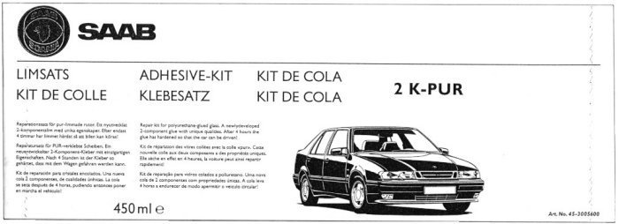

32 025 039 Adhesive Kit, Window Glass
32 025 039 Adhesive Kit, Window Glass

Specifications
Dual-component (2K-PUR).
- Adhesive Betaseal X2500, cartridge 2x225 ml.
- Glass primer Betaprime 5061 (green) with applicator for the glass.
- Activator Betawipe 4001 (blue), a primer with applicator and wipe for sealed glass, etc.
- Betaclean 3300, ready prepared cloths for cleaning and wiping.
Range of application
For glued rear windows.
Packaging
1
Transport
The product is classified as dangerous goods when transporting. Special regulations apply to packaging, marking and transport, therefore existing lead times cannot be guaranteed.
Directives
This product is extremely flammable and will irritate eyes and respiratory system. Contains isocyanates. Do not breathe vapours/mist. Avoid contact with eyes and skin. Store package in well ventilated place. Keep away from sources of ignition - No smoking.